Designing PID for Disturbance Rejection with PID Tuner
PID Tuner is an interactive GUI tool for PID controller design. This demo shows how to use the PID Tuner to design a PI controller with good disturbance rejection performance and then extend it to a ISA-PID controller to enhance reference tracking performance.
Contents
Launching the PID Tuner with Initial PID Design
The plant model is
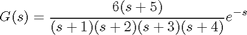
G = zpk(-5,[-1 -2 -3 -4],6,'OutputDelay',1); G.InputName = 'u'; G.OutputName = 'y';
Use the following command to launch the PID Tuner to design a PI controller in parallel form for plant G.
pidtool(G,'pi')
The PID Tuner automatically designs an initial PI controller. Click "Show parameters" button to display the controller gains and performance metrics.
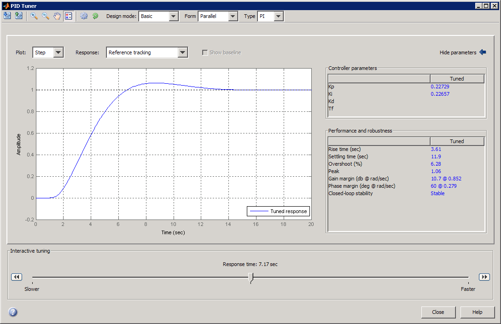
For step reference tracking, the settling time is about 12 seconds and the overshoot is about 6.3 percent, which is acceptable for this example.
Tuning PID for Disturbance Rejection
Assume that a step disturbance occurs at the plant input and the main purpose of the PI controller is to reject this disturbance quickly. In the rest of this section, we will demonstrate how to design the PI controller for better disturbance rejection in the PID Tuner. We also expect that the reference tracking performance is degraded as disturbance rejection performance improves.
Because the attenuation of low frequency disturbance is inversely proportional to integral gain Ki, maximizing the integral gain is a useful heuristic to obtain a PI controller with good disturbance rejection. For background, see Karl Astrom et al., "Advanced PID Control", Chapter 4 "Controller Design", 2006, The ISA Society.
Switch Response to Input disturbance rejection, The peak deviation is about 1 and it settles to less than 0.1 in about 9 seconds.
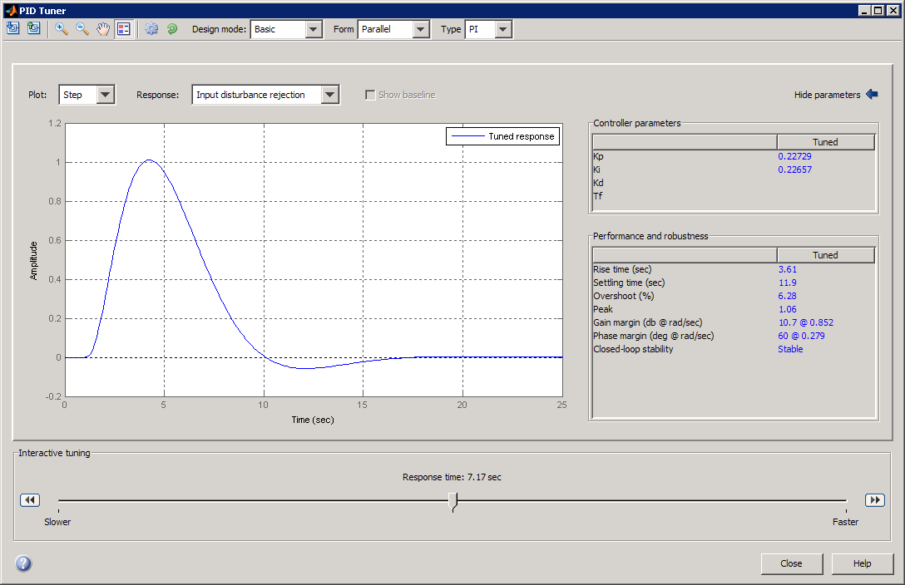
Move the slider to the right to increase the response speed (open loop bandwidth). The Ki gain in the Controller parameters table first increases and then decreases, with the maximum value occurring at 0.3. When Ki is 0.3, the peak deviation is reduced to 0.9 (about 10% improvement) and it settles to less than 0.1 in about 6.7 seconds (about 25% improvement).
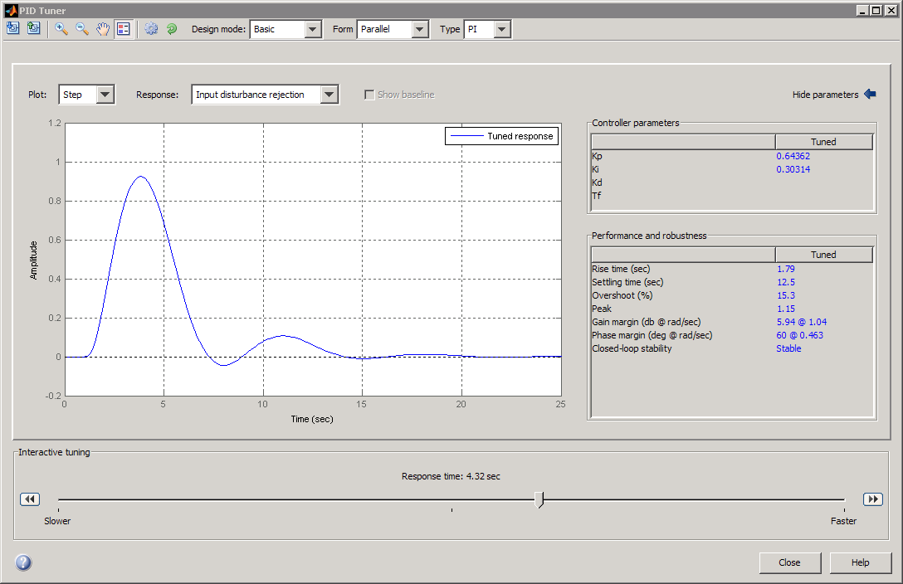
Switch the response back to Reference tracking. Because we increase the bandwidth, the step reference tracking response becomes more oscillated. Additionally the overshoot exceeds 15 percent, which is usually unacceptable. This type of performance trade off between reference tracking and disturbance rejection often exists because a single PID controller is not able to satisfy both design goals at the same time.
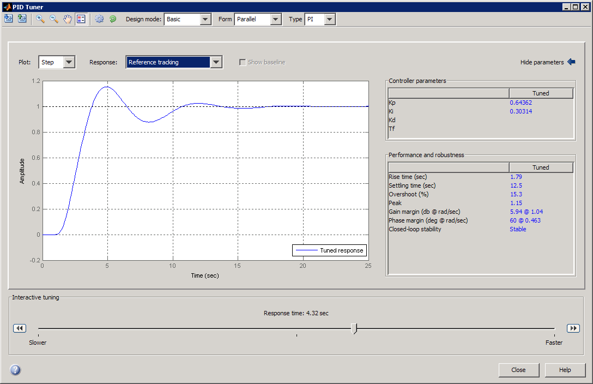
Export the designed PI controller to MATLAB Workspace by clicking the second toolbar button. The controller is represented by a PID object and you need it to create an ISA-PID controller in the next section.
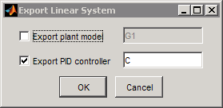
You can also manually create the same PI controller in MATLAB Workspace by using the pid command. In this command you can directly specify the Kp and Ki gains obtained from the parameter table of the PID Tuner.
C = pid(0.64362,0.30314); C.InputName = 'e'; C.OutputName = 'u'; C
Continuous-time PI controller in parallel form, from input "e" to output "u":
1
Kp + Ki * ---
s
with Kp = 0.64362, Ki = 0.30314
Extending PID controller to ISA-PID Controller
A simple solution to make a PI controller perform well for both reference tracking and disturbance rejection is to upgrade it to an ISA-PID controller. It improves reference tracking response by providing an additional tuning parameters b that allows independent control of the impact of the reference signal on the proportional action.
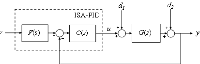
In the above ISA-PID structure, there is a feedback controller C and a feed-forward filter F. In this example, C is a regular PI controller in parallel form that can be represented by a PID object:
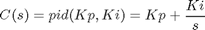
F is a pre-filter that involves Kp and Ki gains from C plus the set-point weight b:
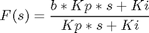
Therefore the ISA-PID controller has two inputs (r and y) and one output (u).
Set-point weight b is a real number between 0 and 1. When it decreases, the overshoot in the reference tracking response is reduced. In this example, b is chosen to be 0.7.
b = 0.7; % the following code constructs an ISA-PID from the feedback controller PID F = tf([b*C.Kp C.Ki],[C.Kp C.Ki]); F.InputName = 'r'; F.OutputName = 'uf'; Sum = sumblk('e','uf','y','+-'); ISAPID = connect(C,F,Sum,{'r','y'},'u'); ISAPID
Transfer function from input "r" to output "u":
0.4505 s^2 + 0.5153 s + 0.1428
------------------------------
s^2 + 0.471 s
Transfer function from input "y" to output "u":
-0.6436 s - 0.3031
------------------
s
Compare Performance
The reference tracking response with ISA-PID controller has much less overshoot because set-point weight b reduces overshoot.
% Closed-loop system with PI controller for reference tracking sys1 = feedback(ss(G)*C,1); set(sys1,'Name','PID'); % Closed-loop ISA-PID system with ISA-PID controller for reference tracking sys2 = connect(ISAPID,ss(G),'r','y'); set(sys2,'Name','ISA-PID'); % Compare responses figure; step(sys1,'r-',sys2,'b.'); legend('show','location','southeast') title('Reference Tracking')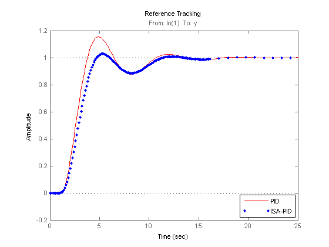
The disturbance rejection responses are the same because set-point weight b only affects reference tracking.
% Closed-loop system with PI controller for disturbance rejection sysd1 = feedback(ss(G),C); set(sysd1,'Name','PID'); % Closed-loop system with ISA-PID controller for disturbance rejection sysd2 = connect(ISAPID,ss(G),'u','y'); set(sysd2,'Name','ISA-PID'); % Compare responses figure; step(sysd1,'r-',sysd2,'b.'); legend('PID','ISA-PID'); title('Disturbance Rejection')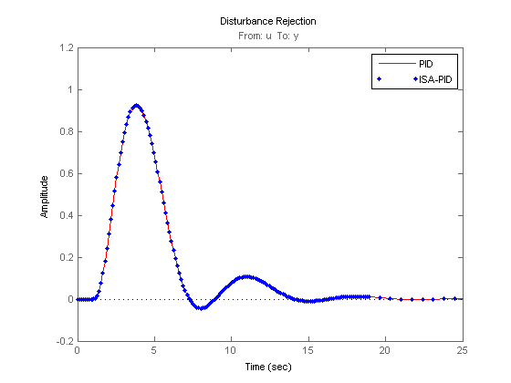